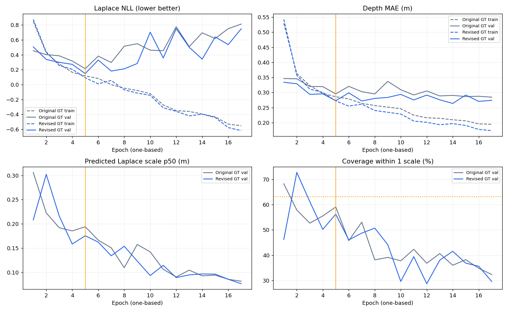

MP3D UnLoc 재학습 결과 · GT 재검수
Train 3,072 RGB · val 1,340 · test 1,427 (3개 건물/6개 층). 기존·재학습 모델 모두 validation NLL 최적 epoch 5. 두 run 모두 17 epoch에서 patience 12로 종료했습니다.
전체 수치 · RGB·likelihood·ray 검토 · 2DFP 재검수 · 수치 JSON · W&B
전체 test 지표
MP3D의 모든 행은 같은 1,427 query입니다. 모델 재학습 효과는 기존 모델·수정 지도 ↔ 재학습 모델·수정 지도를 비교합니다. 후보 pose/grid는 동일합니다. HSSD는 데이터셋·학습량·체크포인트(epoch20)가 다른 참고값입니다.
Depth·uncertainty — 같은 수정 GT 기준
동일 query의 joint 성공(≤1m·30°) 변화: 개선 163개, 악화 120개, 둘 다 성공 542개, 둘 다 실패 602개. 순증 43개입니다.
재학습 모델의 층별 지표
평균·p90 보조 지표
학습 경향성

후반 val MAE는 거의 같지만 예측 uncertainty가 작아지면서 NLL과 coverage가 악화됩니다. 일반화 한계와 uncertainty 과신이 함께 관찰됩니다. 단순히 모든 depth 예측이 더 나빠졌다고 해석하지 않습니다.
RGB·likelihood·depth·선택 열 ray
총 294개 검토 패널. Gallery 선정은 전체 성능 집계와 무관합니다. Train/val 및 제외 관측은 GT 진단용이며 test 지표에 섞지 않았습니다.
RGB — 열을 클릭하면 해당 ray 선택
동일 지도 버전 · +X 오른쪽 / +Z 아래likelihood는 각 위치에서 36 yaw의 최대 score를 query별 색상 정규화한 값입니다. query 간 절대 확신도 비교가 아닙니다. 파랑=GT pose, 초록=선택 모델 MAP pose. 노랑=카메라 정면.
RGB 열

주황=재학습 예측, 보라 점선=기존 예측, 파랑=학습 GT, 회색=scan, 초록 점선=CAD. 10m는 radial range cap이며 학습 GT는 forward depth로 변환합니다. 지도 ray는 50m 진단값의 실제 충돌점을 표시합니다. Scan 결손/불안정 열은 무효로 표시합니다.
관측·ray 데이터 · GT 선별 기준과 전체 후보 목록